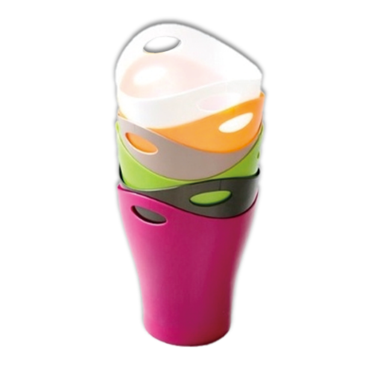

Garbo

가르보 쓰레기통은 생명력이 넘치는 활짝 핀 꽃과 같은 관능적인 형태를 갖고 있으며 또한 바닥보다
상단이 더 넓기 때문에 쓰레기를 넣을 때도 쉬우며 손잡이가 있는 부분을 조금 더 위로 길게 만들어 손에 들었을 때 쓰레기가 손에 직
접적으로 닿는 것을 방지했다고 합니다. 게다가 형태와 재료 덕분의 한번의 사출만으로 제품이 완성되기 때문에 산업적인 측면에서도 아주 저렴하게 생산한다.
상단이 더 넓기 때문에 쓰레기를 넣을 때도 쉬우며 손잡이가 있는 부분을 조금 더 위로 길게 만들어 손에 들었을 때 쓰레기가 손에 직
접적으로 닿는 것을 방지했다고 합니다. 게다가 형태와 재료 덕분의 한번의 사출만으로 제품이 완성되기 때문에 산업적인 측면에서도 아주 저렴하게 생산한다.